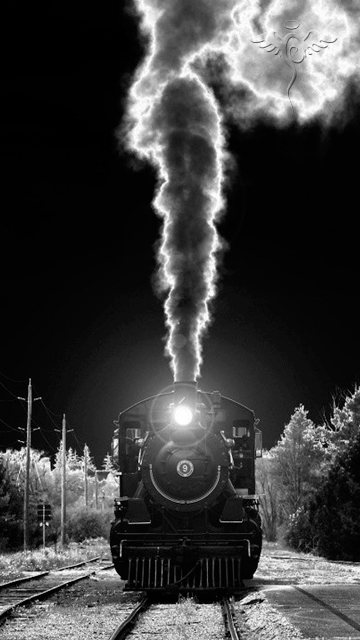

El cuento del cuento que contaronPuesiesque Mulín, Cofia, Chepete y la Culachita se sentaron y dijero
n: “Contemos cuentos debajo desta carreta”. “Sí”, dijeron“contemos”. Y entonces Chepete dijo: “Yo sé uno bien arrechito”. “Contalo, pué”, le dijeron. Y él entonce lo contó y dijo:“Puesiesque un día, ya bien de noche, venía un tren y al yegar a una sombra de un palón, siasustó la máquina y se descarrilósin sentir a quioras, y se jue caminando por un montarral hasta que ya nuguantó, porquiba descalza, y se paró debajo de unos
palencos de la montaña. Y los maquinistas dijeron: “¡Dejemos aquí esta papada vieja, que tanto que pesa!” Y la dejaron, ycreció el monte con el tiempo. Y un día la hayaron ayí los micos y se encaramaron en ella y pensaron: “¿Qué será?” Y un mico jaló la pita de la campana y ¡talán, glán, glán! sonó. Y salieron virados por los palos y diay regresaron y la golvieron asonar hasta que ya no les dio miedo. Entonce con unos martiyos se pusieron a sonar la campana y toda la máquina, hasta que le sacaron chispas y se golvió a prender la leña y empezó a calentarse: ¡fruca, fruca, fruca!… Y un mico jaló el pito y ¡pú-pú!,pitó y salió a toda virazón otragüelta, hasta que se les quitó el miedo y se pusieron a meterle leña y leña, pero como la máquinano tenía ya agua, cuando le jalaron la palanca, se tiró corcoviando por un camino y reventó ¡¡pom!! y todos los micos volaron por el aigre y se quedaron prendidos de las colas en las ramas más altas de los palos”. |
 |